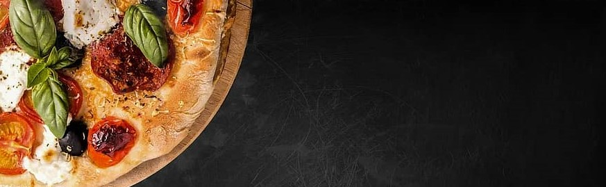
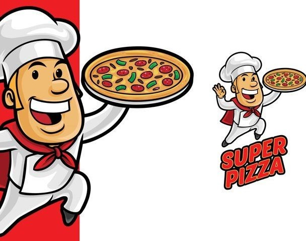
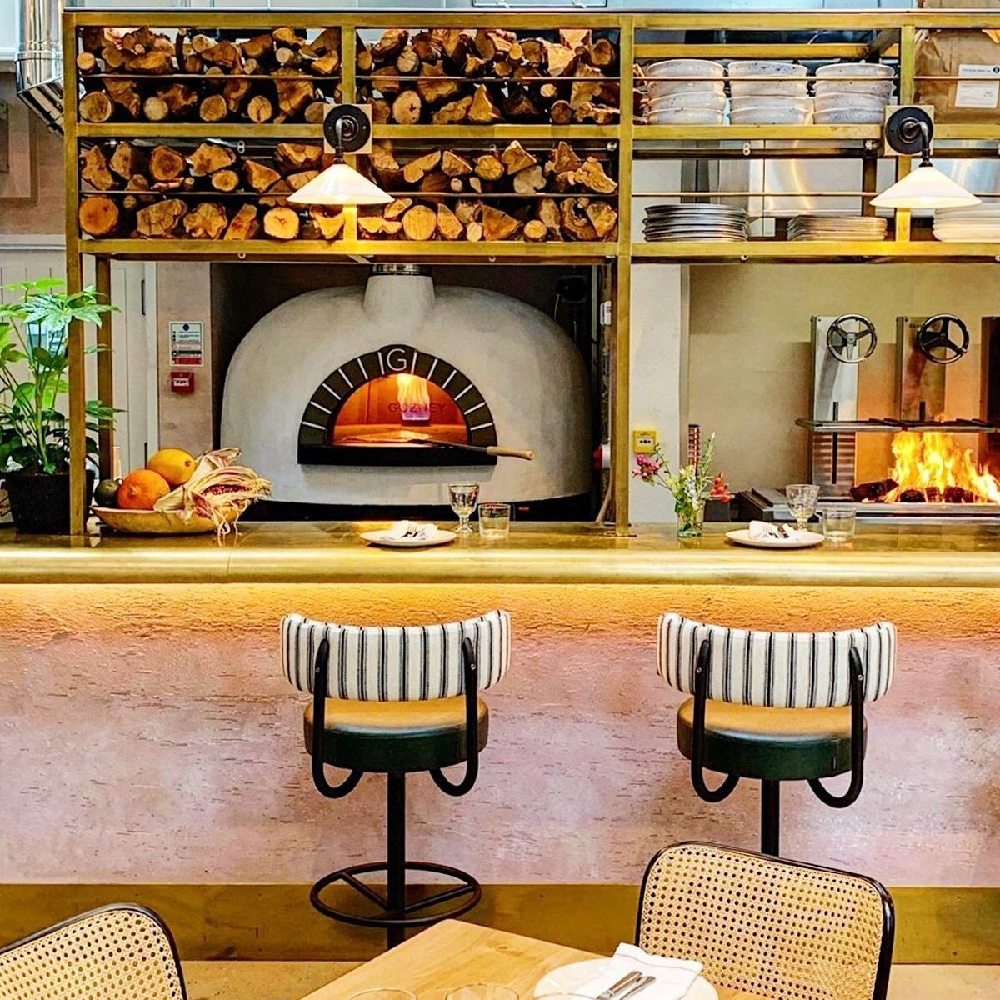
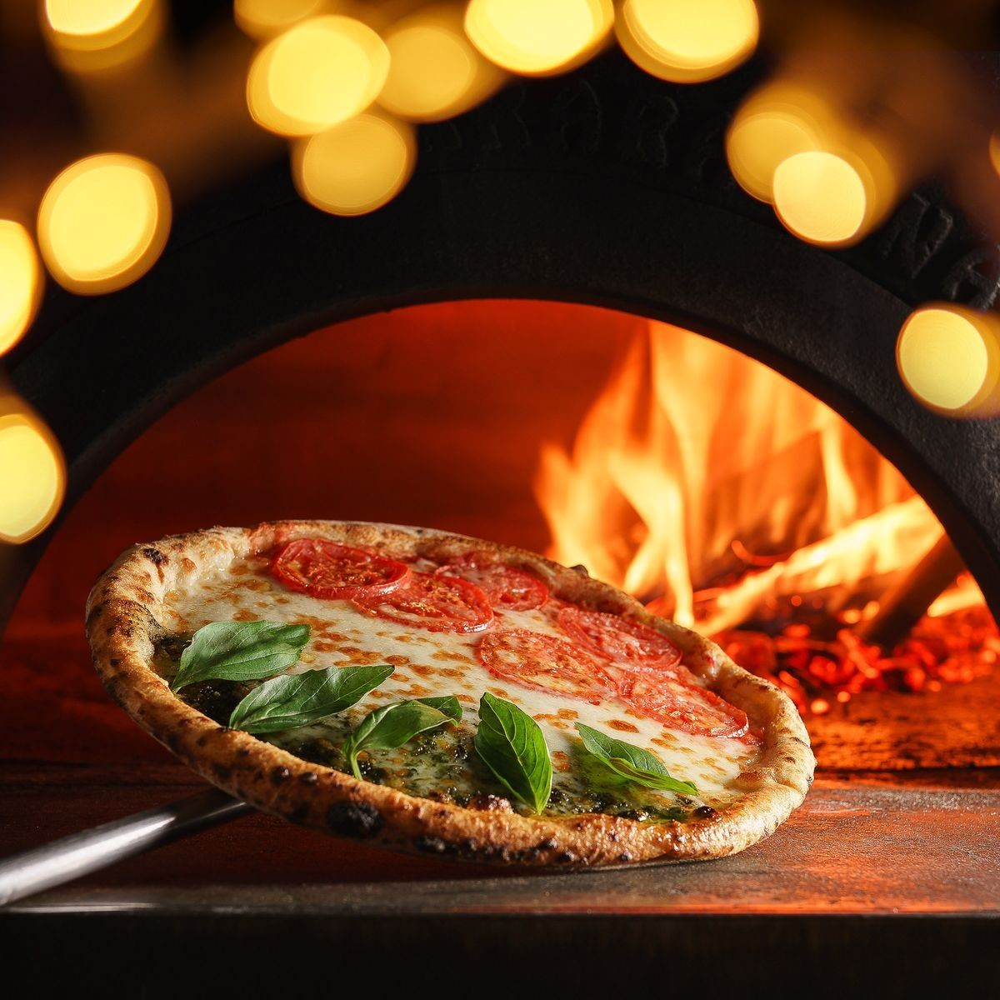

| Home | Menu | Comande | SUPER Pizza | ||
|
NEWS ● NEWS |

Super Pizza-simply the best



Notre pizzeria SuperPizza propose de délicieuses pizzas à emporter, à déguster dans notre restaurant ou en livraison. Ouvert en non-stop, vous pouvez venir vous régaler de pizza à tous moments de la journée. SuperPizza réalise tous les jours une pâte à pizza faite maison et découpe des ingrédients frais pour garnir vos pizzas. © 2022 Super Pizza, créé par DRAGOMIR Victoria |
|